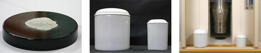

「粉骨」の目的は、故人の想い出を永遠のメモリアルとしてさまざまな置き飾りに収めたり、最近「散骨」を行う人が多くなりましたが、この場合ご遺骨をミリ単位にする必要があります。
また、納骨堂などをご利用で、限られたスペースに多くのご遺骨を納めたいなど、もう一つの供養としてご提案いたします。
粉骨の過程をみることは、ご遺族様が死を受け入れるための貴重なお時間になるという考えのもと、ニチロ静内でご遺族様お立会いによる粉骨をおこなっております。
粉骨の良いところ
ではそもそも粉骨のメリットとは、何でしょうか？粉骨することにより、以下のことが可能となります。
- 散骨、自然葬
- 収容スペースが限られている納骨堂での孫世代、ひ孫世代までの遺骨収納
- 少ないスペースでの自宅安置
- さまざまな形の骨壷へ収納
弊社粉骨の特徴
弊社の粉骨は、国内でも有数の技術により、以下の特長を持っています。
- 粉骨時間がかからない
- 音が小さい
- 微細な粉骨
従来、粉骨には１日ほどかかっておりましたが、約30分ほどしかかかりません。
従来、作業音も大きく、ご遺族様の感情を損なうことが考えられましたが、その心配は要りません。
2ミリ以下の粒子まですることが可能となっています。
お申込みについて
- 粉骨お申し込み
- 必要書類の準備
- 粉骨当日
事前にお電話で「粉骨」のご希望「日時」をお伝えください。
粉骨の際には以下のものが必要となりますのでご準備をお願いいたします
・火葬許可証又は、埋蔵許可証（コピーでも可）
・申込者ご本人と証明できる物（運転免許証、保険証等）
・印鑑（どんな印鑑でも可）
・粉骨所でご遺族又は、委任業者立会いのもと粉骨。
・ご遺骨、証明証、委任状をお預かりします。
（ニチロ立会粉骨所で受付）
・粉骨と粉骨証明書のお渡し。
（所要時間は、約30分くらいです）
※湿気を含むご遺骨の場合は乾燥処理を行いますので粉骨時間とは別に15分程度お時間をいただきます。